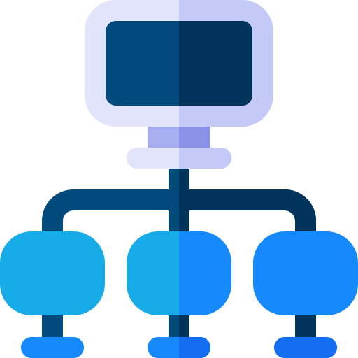

<!--
  Generated template for the CateverPage page.

  See http://ionicframework.com/docs/components/#navigation for more info on
  Ionic pages and navigation.
-->
<ion-header>

    <ion-navbar>
        <ion-title>Categoría</ion-title>
    </ion-navbar>
</ion-header>


<ion-content padding>
    <ion-card>
        <ion-card-header class="titulo">{{cate.nom}}</ion-card-header>
        
        
        <div id="cam" (click)="getPictureCamara()"></div>
        <p>{{cate.det}}</p>
    </ion-card>
    
    <ion-grid>
        <ion-row>
            <ion-col>
                <button ion-button color="Primary" (click)="irAModificar()">Actualizar</button>
            </ion-col>
            <ion-col></ion-col>
            <ion-col>
                <button ion-button color="danger">Eliminar</button>
            </ion-col>
        </ion-row>
    </ion-grid>
    <ion-card *ngIf="imageURI">
        
         <button ion-button color="danger" (click)="CargarImagen()">Actualizar foto</button>
    </ion-card>
    {{informe}}
    
</ion-content>
